Project Portfolio
Built Across India.
Trusted by the Best.
From high-rise towers in Mumbai to national highway viaducts — Wallgreens formwork has shaped India's built environment for six decades.
Our Work
Previous Projects
A selection of formwork and scaffolding projects delivered across India's most demanding construction programmes.
 Industrial
IndustrialTata Semiconductor Assembly and Test Facility
Tata Semiconductor Assembly & Test (TSAT) facility in Jagiroad — India's first outsourced semiconductor assembly & test plant, a USD 3-billion strategic investment. Mach Deck and circular wooden formwork deployed across the production and utility buildings.
 Infrastructure
InfrastructureBullet Train Project
India's first high-speed rail corridor — Mumbai to Ahmedabad. J70 StiMBERTM formwork systems supplied for this landmark infrastructure programme with Larsen & Toubro.
 Infrastructure
InfrastructureNavi Mumbai International Airport
India's upcoming greenfield airport designed to decongest Mumbai's CSMIA — a transformative aviation gateway for the metropolitan region. Wallgreens formwork systems deployed across the terminal and apron-edge RCC structures.
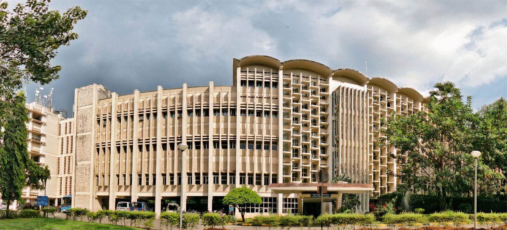
InfrastructureIIT Bombay — Academic Block, Powai
Academic expansion at IIT Bombay's Powai campus — one of India's premier engineering institutions. J70 StiMBERTM Basic deployed across typical slab and column works.
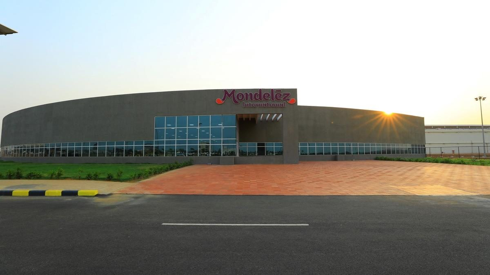
IndustrialMondelez Factory — Sri City
New FMCG manufacturing facility for Mondelez India (maker of Cadbury, Oreo) at Sri City industrial region. J70 StiMBERTM Basic used across process-floor and warehouse slab structures.
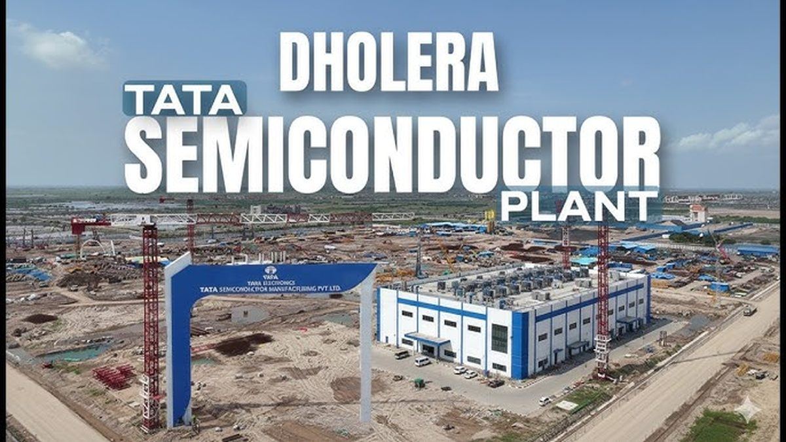
IndustrialDholera Semiconductor Fab — Tata Electronics
India's first commercial semiconductor fabrication plant — Tata Electronics + PSMC 28 nm logic wafer facility in the Dholera Special Investment Region, a USD 11-billion strategic build. J70 StiMBERTM Basic deployed for large-slab and utility-corridor formwork.
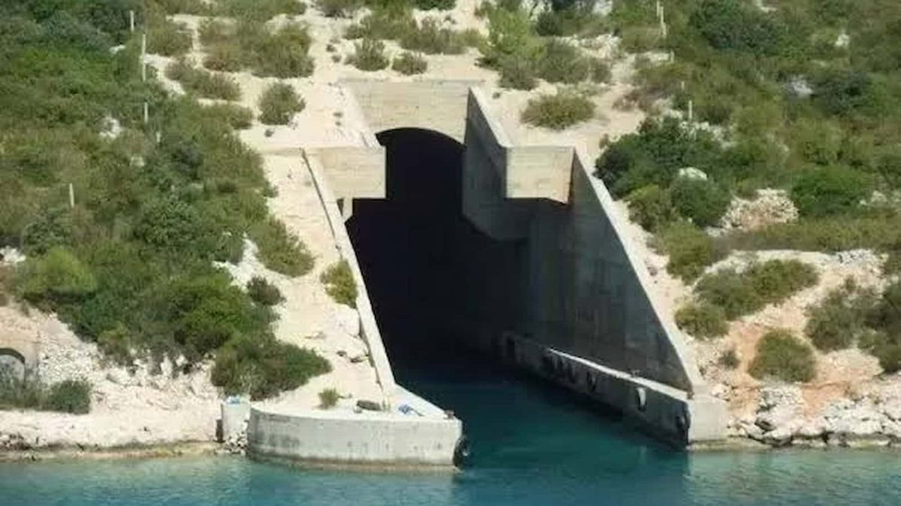
InfrastructureINS Varsha — Naval Station, Rambilli
Indian Navy strategic facility near Visakhapatnam supporting the country's submarine fleet. J70 StiMBERTM Basic used on critical-path RCC elements where tolerance and re-use matter.
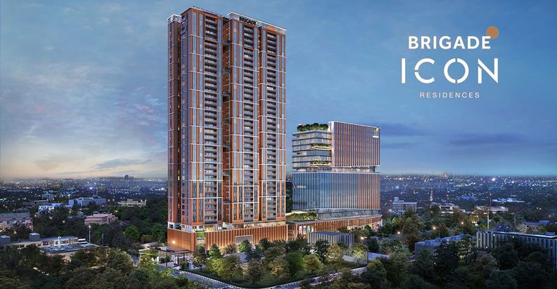
ResidentialBrigade Icon — Luxury Residential Tower
High-rise premium residential development by Brigade Group in Bangalore, one of South India's flagship luxury tower programmes. Engineered J70 StiMBERTM beams deployed across repetitive slab cycles for speed and finish consistency.
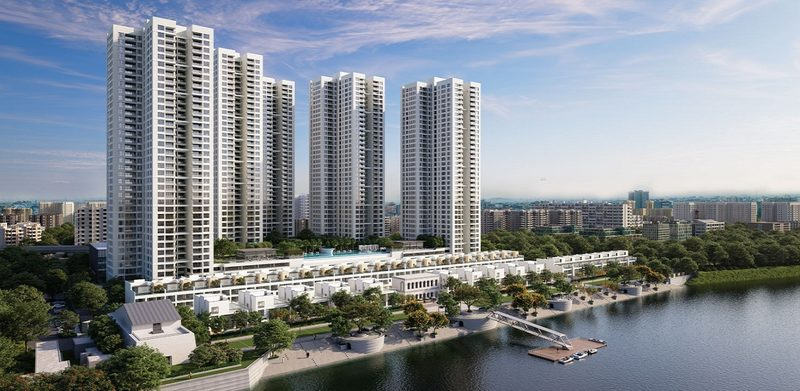
ResidentialSansara — Premium Residential Development
Large-format residential complex on the Howrah–Kolkata corridor delivering modern high-rise housing. Hybrid J70 StiMBERTM beams supported multi-tower simultaneous pours.
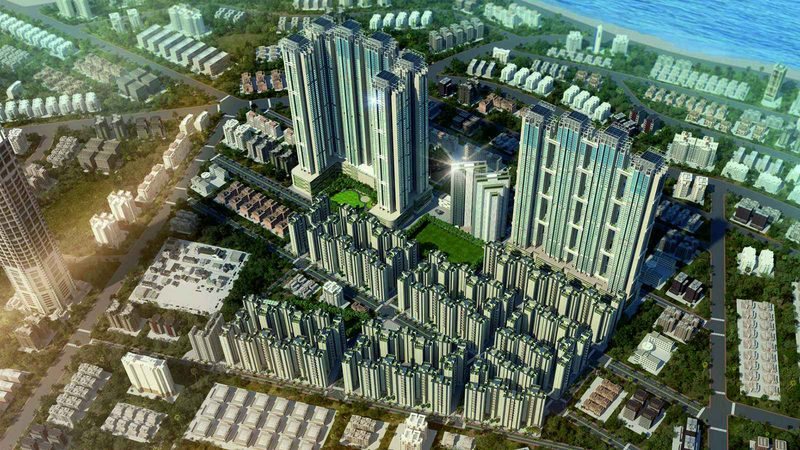
ResidentialBDD Chawl Redevelopment — Mumbai
India's largest urban redevelopment programme replacing 100-year-old chawls in Worli and N.M. Joshi Marg with 40+ rehab towers. J70 StiMBERTM beams serve the tall cycle-driven slab pours.
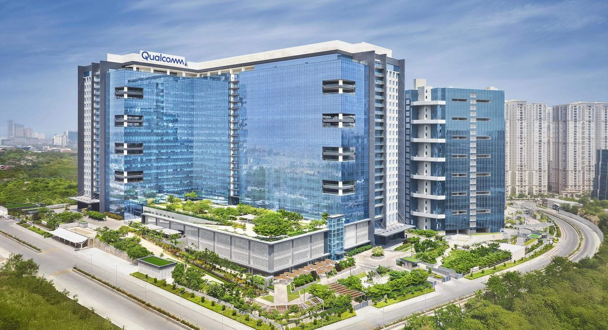
CommercialRaheja Knowledge City — Raidurg, Hyderabad
K Raheja Corp's Grade-A commercial tech campus in the heart of Hyderabad's HITEC City / Raidurg IT corridor — one of the region's largest office developments. High-performance J70 StiMBERTM Pro beams for extended reuse across typical floors.
M3M The Line
Premium commercial office tower in Noida's Sector-72 business district. Mach Deck modular slab formwork deployed for rapid, finish-consistent typical-floor cycles.
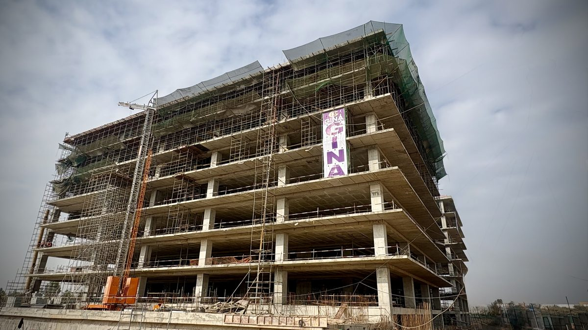
CommercialBIAL Airport City — Business Park Phase 1
Phase 1 of the Grade-A business park within Bengaluru International Airport's mixed-use airport city development — delivered with Wallgreens' Mach Deck drop-head panel formwork system in partnership with Gina Engineering Co. Pvt. Ltd. Labour-saving, safe 12-day slab cycle for rapid typical-floor delivery.
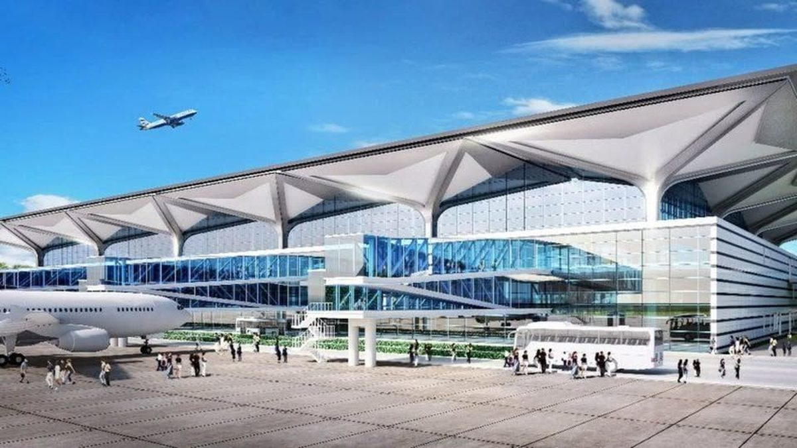
InfrastructureDarbhanga Airport — Civil Enclave Terminal
New civil enclave terminal for Darbhanga airport opening north Bihar's 2.5-million-person catchment to commercial aviation. J70 StiMBERTM beams used across terminal roof and apron-edge structures.
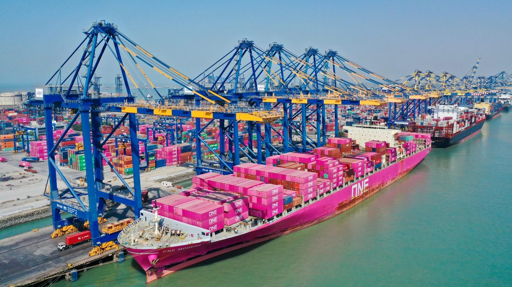
InfrastructureAdani Mundra — South APL Road Expansion
Infrastructure expansion at Adani's Mundra Port — India's largest private commercial port handling containers, coal, crude and LNG. J70 StiMBERTM Basic and Pro variants deployed across heavy RCC works.
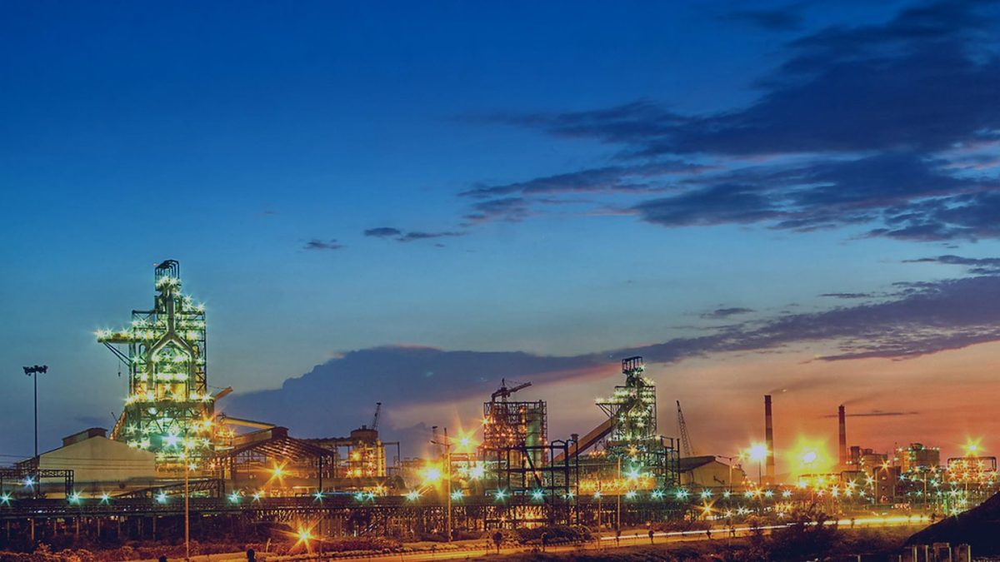
InfrastructureJSW Dolvi Steel Plant — Capacity Expansion
JSW Steel's integrated 10 MTPA Dolvi works — one of India's most technologically advanced steel plants. J70 StiMBERTM beams supplied for heavy foundation and plant-structure formwork.
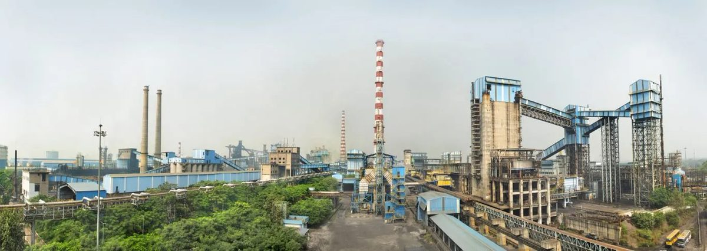
IndustrialTata Steel Jamshedpur — Plant Modernisation
Ongoing modernisation of Tata Steel's 112-year-old flagship integrated steel works in Jamshedpur — raising hot-metal capacity and upgrading key process lines. J70 StiMBERTM Basic used across heavy civil structures.
Godrej Ascend
Premium residential township by Godrej Properties on Thane's Kolshet Road corridor. Wallgreens shuttering plywood and J70 StiMBERTM Basic beams deployed for repetitive typical-floor slab cycles.
Prestige Park Grove
Prestige Group's flagship 85-acre integrated residential township in Whitefield — one of Bengaluru's largest gated community developments. J70 StiMBERTM Basic and Pro beams deployed across multi-tower slab pours.
Godrej Reserve
Premium gated residential township by Godrej Properties at Kandivali East — a flagship Mumbai development. Wallgreens shuttering plywood supplied for high-finish slab and wall formwork.
Birla Niyaara
Birla Estates' flagship super-luxury residential tower at Worli — one of south Mumbai's most prestigious addresses. Shuttering plywood supplied for high-finish slab pours.
Hiranandani Estate
Hiranandani Group's landmark integrated townships in Mumbai — neo-classical architecture across multiple developments. Shuttering plywood supplied for typical-floor slab formwork.
Kirloskar Toyota — India Headquarters
New India head office for Kirloskar Toyota — a landmark corporate campus in Bengaluru. Mach Deck modular slab formwork deployed for rapid, finish-consistent typical-floor cycles.
CapitaLand ITPL Expansion
Expansion of International Tech Park Bangalore (ITPL) by CapitaLand — a premier Grade-A IT business park in Whitefield. J70 StiMBERTM Pro beams deployed for extended reuse across typical floors.
IKEA Global Projects — Gurugram
IKEA Global Projects facility at Gurugram — operational and logistics infrastructure for the Swedish retail giant's India expansion. J70 StiMBERTM Basic deployed across typical slab works.
RMZ Nexus
RMZ Corp's Grade-A commercial office development at Gurugram — a premium business destination in the NCR. Mach Deck modular slab formwork deployed for rapid typical-floor cycles.
Bhogapuram International Airport
Greenfield international airport north of Visakhapatnam — a key aviation gateway for north Andhra Pradesh. Circular wooden formwork deployed for architectural column structures.
Bangalore Airport Terminal 2
Kempegowda International Airport's signature Terminal 2 — a biophilic ‘terminal in a garden’ designed to handle an additional 25 million passengers annually. Circular wooden formwork deployed for the iconic architectural columns and organic structural forms.
Chennai Metro
Metropolitan rail network expansion for Chennai Metro — extending connectivity across the city's growing transit corridor. J70 StiMBERTM Pro beams supplied for elevated viaduct and station structures.
AIIMS Madurai
New All India Institute of Medical Sciences (AIIMS) campus in Madurai under the PMSSY programme — strengthening tertiary healthcare in Tamil Nadu. J70 StiMBERTM Pro beams deployed across hospital block RCC works.
Bokaro Sinter Plant
Sinter plant modernisation at SAIL's Bokaro Steel Plant — India's largest integrated steel producer. J70 StiMBERTM Basic used across heavy foundation and plant-structure formwork.
Panipat Refinery Expansion
Capacity expansion at Indian Oil's Panipat Refinery — one of India's largest hydrocarbon processing complexes. J70 StiMBERTM Basic deployed for heavy civil and process-unit RCC works.
Yashoda Hospital
Multi-specialty hospital campus expansion by Yashoda Group — a leading tertiary-care healthcare provider in Hyderabad. Mach Deck modular slab formwork deployed for rapid, finish-consistent floor cycles.
Guwahati Police Reserve Building
Assam Police reserve headquarters building in Guwahati — a strategic government infrastructure project. J70 StiMBERTM Basic deployed across slab and column formwork.
Central Secretariat Redevelopment
Central Vista redevelopment programme — Central Secretariat office buildings housing central government ministries in New Delhi. J70 StiMBERTM Basic and circular wooden formwork deployed across architectural and structural RCC works.
Delhi Airport Terminal 1
Terminal 1 expansion at Indira Gandhi International Airport — modernising the capital's primary domestic aviation gateway. Circular wooden formwork deployed for signature architectural columns and roof support structures.
Swadeshi Infratech Project
Infrastructure development project by Swadeshi Infratech — focused on heavy civil and structural works. J70 StiMBERTM Basic deployed across RCC elements.
Ashoka Epsilon
Industrial infrastructure programme by Ashoka Buildcon, one of India's leading highway and civil EPC contractors. J70 StiMBERTM Basic and Pro deployed across heavy RCC and beam works.
Divyashree Technopark
Large-format IT/ITeS technopark development by Divyashree Developers at Whitefield — part of Bengaluru's technology corridor. Mach Deck modular slab formwork deployed for rapid typical-floor cycles.
Brigade Icon — Luxury Residential Tower
High-rise premium residential development by Brigade Group in Bangalore, one of South India's flagship luxury tower programmes. Engineered J70 StiMBERTM beams deployed across repetitive slab cycles for speed and finish consistency.
Sansara — Premium Residential Development
Large-format residential complex on the Howrah–Kolkata corridor delivering modern high-rise housing. Hybrid J70 StiMBERTM beams supported multi-tower simultaneous pours.
BDD Chawl Redevelopment — Mumbai
India's largest urban redevelopment programme replacing 100-year-old chawls in Worli and N.M. Joshi Marg with 40+ rehab towers. J70 StiMBERTM beams serve the tall cycle-driven slab pours.
InfrastructureBullet Train Project
India's first high-speed rail corridor — Mumbai to Ahmedabad. J70 StiMBERTM formwork systems supplied for this landmark infrastructure programme with Larsen & Toubro.
Godrej Ascend
Premium residential township by Godrej Properties on Thane's Kolshet Road corridor. Wallgreens shuttering plywood and J70 StiMBERTM Basic beams deployed for repetitive typical-floor slab cycles.
Prestige Park Grove
Prestige Group's flagship 85-acre integrated residential township in Whitefield — one of Bengaluru's largest gated community developments. J70 StiMBERTM Basic and Pro beams deployed across multi-tower slab pours.
Godrej Reserve
Premium gated residential township by Godrej Properties at Kandivali East — a flagship Mumbai development. Wallgreens shuttering plywood supplied for high-finish slab and wall formwork.
Birla Niyaara
Birla Estates' flagship super-luxury residential tower at Worli — one of south Mumbai's most prestigious addresses. Shuttering plywood supplied for high-finish slab pours.
Hiranandani Estate
Hiranandani Group's landmark integrated townships in Mumbai — neo-classical architecture across multiple developments. Shuttering plywood supplied for typical-floor slab formwork.
Raheja Knowledge City — Raidurg, Hyderabad
K Raheja Corp's Grade-A commercial tech campus in the heart of Hyderabad's HITEC City / Raidurg IT corridor — one of the region's largest office developments. High-performance J70 StiMBERTM Pro beams for extended reuse across typical floors.
M3M The Line
Premium commercial office tower in Noida's Sector-72 business district. Mach Deck modular slab formwork deployed for rapid, finish-consistent typical-floor cycles.
BIAL Airport City — Business Park Phase 1
Phase 1 of the Grade-A business park within Bengaluru International Airport's mixed-use airport city development — delivered with Wallgreens' Mach Deck drop-head panel formwork system in partnership with Gina Engineering Co. Pvt. Ltd. Labour-saving, safe 12-day slab cycle for rapid typical-floor delivery.
Kirloskar Toyota — India Headquarters
New India head office for Kirloskar Toyota — a landmark corporate campus in Bengaluru. Mach Deck modular slab formwork deployed for rapid, finish-consistent typical-floor cycles.
CapitaLand ITPL Expansion
Expansion of International Tech Park Bangalore (ITPL) by CapitaLand — a premier Grade-A IT business park in Whitefield. J70 StiMBERTM Pro beams deployed for extended reuse across typical floors.
IKEA Global Projects — Gurugram
IKEA Global Projects facility at Gurugram — operational and logistics infrastructure for the Swedish retail giant's India expansion. J70 StiMBERTM Basic deployed across typical slab works.
RMZ Nexus
RMZ Corp's Grade-A commercial office development at Gurugram — a premium business destination in the NCR. Mach Deck modular slab formwork deployed for rapid typical-floor cycles.
Darbhanga Airport — Civil Enclave Terminal
New civil enclave terminal for Darbhanga airport opening north Bihar's 2.5-million-person catchment to commercial aviation. J70 StiMBERTM beams used across terminal roof and apron-edge structures.
Adani Mundra — South APL Road Expansion
Infrastructure expansion at Adani's Mundra Port — India's largest private commercial port handling containers, coal, crude and LNG. J70 StiMBERTM Basic and Pro variants deployed across heavy RCC works.
INS Varsha — Naval Station, Rambilli
Indian Navy strategic facility near Visakhapatnam supporting the country's submarine fleet. J70 StiMBERTM Basic used on critical-path RCC elements where tolerance and re-use matter.
JSW Dolvi Steel Plant — Capacity Expansion
JSW Steel's integrated 10 MTPA Dolvi works — one of India's most technologically advanced steel plants. J70 StiMBERTM beams supplied for heavy foundation and plant-structure formwork.
InfrastructureNavi Mumbai International Airport
India's upcoming greenfield airport designed to decongest Mumbai's CSMIA — a transformative aviation gateway for the metropolitan region. Wallgreens formwork systems deployed across the terminal and apron-edge RCC structures.
IIT Bombay — Academic Block, Powai
Academic expansion at IIT Bombay's Powai campus — one of India's premier engineering institutions. J70 StiMBERTM Basic deployed across typical slab and column works.
Bhogapuram International Airport
Greenfield international airport north of Visakhapatnam — a key aviation gateway for north Andhra Pradesh. Circular wooden formwork deployed for architectural column structures.
Bangalore Airport Terminal 2
Kempegowda International Airport's signature Terminal 2 — a biophilic ‘terminal in a garden’ designed to handle an additional 25 million passengers annually. Circular wooden formwork deployed for the iconic architectural columns and organic structural forms.
Chennai Metro
Metropolitan rail network expansion for Chennai Metro — extending connectivity across the city's growing transit corridor. J70 StiMBERTM Pro beams supplied for elevated viaduct and station structures.
AIIMS Madurai
New All India Institute of Medical Sciences (AIIMS) campus in Madurai under the PMSSY programme — strengthening tertiary healthcare in Tamil Nadu. J70 StiMBERTM Pro beams deployed across hospital block RCC works.
Bokaro Sinter Plant
Sinter plant modernisation at SAIL's Bokaro Steel Plant — India's largest integrated steel producer. J70 StiMBERTM Basic used across heavy foundation and plant-structure formwork.
Panipat Refinery Expansion
Capacity expansion at Indian Oil's Panipat Refinery — one of India's largest hydrocarbon processing complexes. J70 StiMBERTM Basic deployed for heavy civil and process-unit RCC works.
Yashoda Hospital
Multi-specialty hospital campus expansion by Yashoda Group — a leading tertiary-care healthcare provider in Hyderabad. Mach Deck modular slab formwork deployed for rapid, finish-consistent floor cycles.
Guwahati Police Reserve Building
Assam Police reserve headquarters building in Guwahati — a strategic government infrastructure project. J70 StiMBERTM Basic deployed across slab and column formwork.
Central Secretariat Redevelopment
Central Vista redevelopment programme — Central Secretariat office buildings housing central government ministries in New Delhi. J70 StiMBERTM Basic and circular wooden formwork deployed across architectural and structural RCC works.
Delhi Airport Terminal 1
Terminal 1 expansion at Indira Gandhi International Airport — modernising the capital's primary domestic aviation gateway. Circular wooden formwork deployed for signature architectural columns and roof support structures.
Swadeshi Infratech Project
Infrastructure development project by Swadeshi Infratech — focused on heavy civil and structural works. J70 StiMBERTM Basic deployed across RCC elements.
Dholera Semiconductor Fab — Tata Electronics
India's first commercial semiconductor fabrication plant — Tata Electronics + PSMC 28 nm logic wafer facility in the Dholera Special Investment Region, a USD 11-billion strategic build. J70 StiMBERTM Basic deployed for large-slab and utility-corridor formwork.
Tata Steel Jamshedpur — Plant Modernisation
Ongoing modernisation of Tata Steel's 112-year-old flagship integrated steel works in Jamshedpur — raising hot-metal capacity and upgrading key process lines. J70 StiMBERTM Basic used across heavy civil structures.
IndustrialTata Semiconductor Assembly and Test Facility
Tata Semiconductor Assembly & Test (TSAT) facility in Jagiroad — India's first outsourced semiconductor assembly & test plant, a USD 3-billion strategic investment. Mach Deck and circular wooden formwork deployed across the production and utility buildings.
Mondelez Factory — Sri City
New FMCG manufacturing facility for Mondelez India (maker of Cadbury, Oreo) at Sri City industrial region. J70 StiMBERTM Basic used across process-floor and warehouse slab structures.
Ashoka Epsilon
Industrial infrastructure programme by Ashoka Buildcon, one of India's leading highway and civil EPC contractors. J70 StiMBERTM Basic and Pro deployed across heavy RCC and beam works.
Divyashree Technopark
Large-format IT/ITeS technopark development by Divyashree Developers at Whitefield — part of Bengaluru's technology corridor. Mach Deck modular slab formwork deployed for rapid typical-floor cycles.